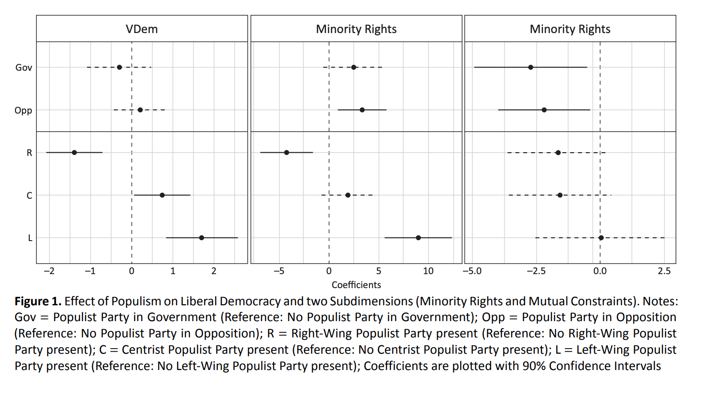

[1] "2023-12-20"[1] 20R for Data Analysis
Session 14
University of Mannheim
Fall 2023
women_pa_final.csv in the data folder of your repoqmd file containing all the code required for replicating your preprocessing and analysis; this qmd should render to HTML and/or PDF lastname_replication.qmd
R and documented in your qmd filestyler package)qmd, please render the latest version to PDF) titled lastname_dataessay.pdf; the text can be up to 3500 words longdata folder) and misc folderDiscuss the data you are using to test the hypotheses:
Discuss the operationalization of your main variables
Start with descriptive stats for main variables and general info, like the number of cases, etc.
Do not put tables with descriptive stats for all variables you’re using in main text. Put the full table in Appendix
In main text, use crosstabs for main variables for summary stats or Graphs for (conditional) distributions of DV: over time (if applicable), main IVs. Include the most informative option, not everything
Discuss how you plan to identify the relationship between your main IV and DV:
When describing modeling approach, discuss which model you select (e.g., linear vs. logistic regression) and why (e.g. nature of the dependent variable)
It may be helpful to include the complete regression equation to illustrate model specifications (see Problem Sets for examples)
On the Distinct Effects of Left-Wing and Right-Wing Populism on Democratic Quality
This study examines the differences and commonalities of how populist parties of the left and right relate to democracy. The focus is narrowed to the relationship between these parties and two aspects of democratic quality, minority rights and mutual constraints. Our argument is twofold: first, we contend that populist parties can exert distinct influences on minority rights, depending on whether they are left-wing or right-wing populist parties. Second, by contrast, we propose that the association between populist parties and mutual constraints is a consequence of the populist element and thus, we expect no differences between the left-wing and right-wing parties. We test our expectations against data from 30 European countries between 1990 and 2012. Our empirical findings support the argument for the proposed differences regarding minority rights and, to a lesser extent, the proposed similarities regarding mutual constraints. Therefore we conclude that, when examining the relationship between populism and democracy, populism should not be considered in isolation from its host ideology.
To test our theoretical arguments, we use a twofold strategy. First, we assess the differences between populist parties in government and opposition. Second, we distinguish between left-wing, center and right-wing populism to investigate the expected associations with minority rights and mutual constraints.
Empirically, we use a pooled cross-sectional design. Since we use the role within a political system as well as a party’s host ideology, we opted for cabinets as the temporal unit of analysis. This approach allows us to determine whether a party is in government or opposition with great precision, while other approaches such as country-years are considerably more imprecise. Our data includes information from 30 European countries between 1990 and 2012. This time span captures major events for European populist parties, from their establishment through their rise. We exclude cabinets with duration of fewer than six months as we assume that any measurable impact is only evident after some time.
To measure democratic quality based on our concept of liberal democracy, we draw on three different sources. We measure aggregated liberal democratic quality by using the liberal democracy score (
v2x_libdem) of the Varieties of Democracy Project (Coppedge et al., 2011). To capture the two subdimensions, mutual constraints, and minority rights, we rely on the Democracy Barometer. For mutual constraints, we use the aggregated dimension of horizontal checks (MC_CHECKS, Merkel et al., 2016, p. 29) which measures the balance between executive and legislative (ratio of parliamentary seats controlled by government to parliamentary seats controlled by opposition), the balance of checks between executive and legislative (ratio of control instruments of legislative over executive to control instruments of executive over legislative), and the power of judicial branch to review political decisions. This measure taps into the checks-and-balances aspect. For minority rights, we use an indicator for the effective access to power for minorities (REP_DR3, Merkel et al., 2016, p. 53) that measures the descriptive representation of minorities and the extent to which they have access to central power.
In addition to our central variables, we include a selected set of covariates that, in theory, may relate to both the presence of populist parties as well as the levels of our democratic measures. These variables are the level of democratic consolidation (time in years since democratization), cabinet duration (in years), cabinet composition (surplus governments, minimal winning coalitions, and minority governments), economic development (GDP per Capita in 1,000 US Dollar), and a dichotomous variable to distinguish between post-communist countries and other countries. A detailed rationale for the inclusion of these variables can be found in Appendix C.
To control for country-specific effects, we apply a linear mixed-effects model with cabinets nested under each country (Gelman & Hill, 2007). The respective countries serve as groups. This particular model also allows us to compare both intra- and cross-country variance. Given our interest in the change in democratic quality as a consequence of the presence of populist parties, modeling intra-country variance allows us to approximate this process.

Paper used in matching lab/problem set: https://onlinelibrary.wiley.com/doi/10.1111/ajps.12018
Empirical Strategy:
Results:
Robustness:
lubridate[1] "2023-12-20"[1] 20Merging Datasets
Check that there are identifies columns with no missings in them
Common cause
Intermediate variable
Selection / endogeneity
\[ \text{Evaluation}_i = \hat\beta_0 + \hat\beta_1 \times \text{Female}_i + \hat\beta_2 \text{Beauty}_i + \hat\beta_3 \times \text{Female}_i \times \text{Beauty}_i \\ \]
Include all constitutive terms, even if you expect that a specific constitutive term alone has no effect on \(Y\)
Do not interpret the coefficients on constitutive terms as unconditional marginal effects:
the coefficient on X only captures the effect of X on Y when Z is zero
the coefficient on Z only captures the effect of Z on Y when X is zero
E.g., it is incorrect to say that a positive and significant coefficient on \(X\) (or \(Z\)) means that an increase in \(X\) (or \(Z\)) is expected to lead to an increase in \(Y\)
Wrong: On average, beauty score is associated with an increase in teaching evaluations, holding all else constant.
Wrong: On average, female instructors receive 0.05 points more in teaching evaluations than males, holding all else constant.
Right: On average, beauty tends to have smaller effect on teaching evaluations among female instructors in comparison to male instructors, holding all else constant.